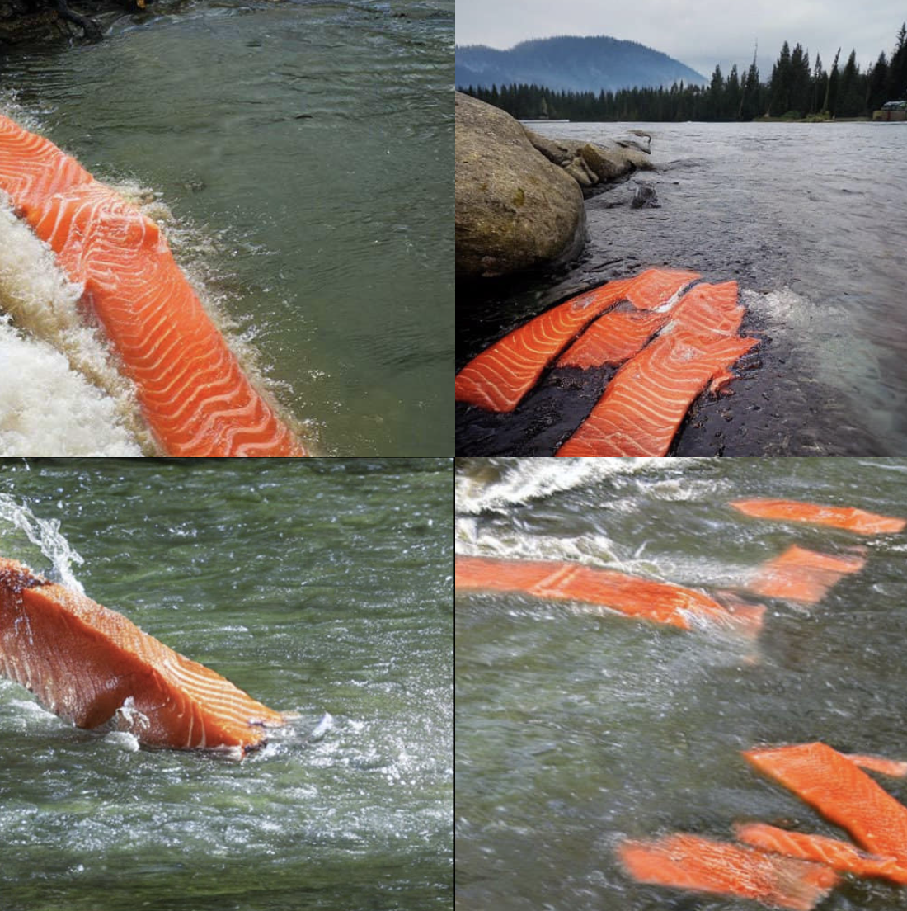

Inspired by the viral AI-generated meme depicting raw salmon sashimi—rather than live fish—swimming upstream, this project is built upon an absurd and darkly comedic Speculative Design framework. In this piece, the player's digital avatar is not a traditional humanoid, but a slice of salmon sashimi.

This sashimi acts as a poignant metaphor for the individual's condition under the algorithmic gaze and hyper-consumerism—a piece of "digital flesh" plated and waiting to be selected and consumed. The project deliberately explores the aesthetics of "erroneous data": the salmon is essentially an awakened cluster of erroneous AI data possessing a survival instinct. It exhibits human-like struggling dynamics while trapped in the physical shell of food. This serves not only as an absurd metaphor for Bodily Autonomy, but also as a sharp interrogation of the boundaries between subjectivity and objectification in a techno-centric society.